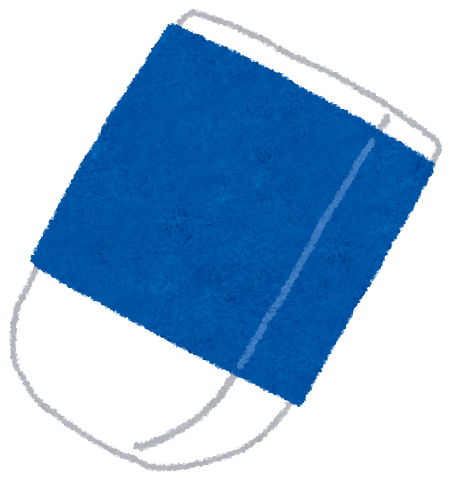

これは消しゴムです。
主に鉛筆などで書かれたものを消去するときに使う文房具。
従来は天然ゴムが主成分だったためそう呼ばれる。現在はプラスチック製が主流のため字消しとも呼ばれるが、慣用的に消しゴムと呼ばれている。
かつてはパンが使われていたが1770年、イギリスのジョゼフ・プリーストリーが、ブラジル産のゴムに紙に書いた鉛筆の字を消し去る性質があることを発見したのが消しゴムの始まりである。
発見日とされる4月15日はRubber Eraser Dayとされている。1772年頃にはロンドンで市販されており、「rub out（こするもの）」と呼ばれた。これが、今日ゴム一般を意味する英単語ラバー（rubber）の語源である。なお、現在でもパンが消しゴムとして用いられることはある。